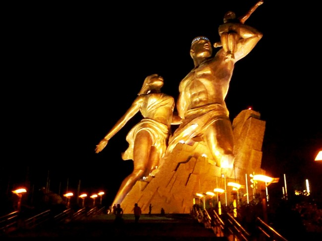

Change image every 2 seconds:
« L’homme, la femme et leur enfant feront face au soleil, symbolisant l’ouverture du continent au reste du monde. C’est une force de propulsion et d’attraction dans la grandeur, la stabilité et la pérennité de l’Afrique », dit le président Wade. Haut de 52 mètres et réalisé en cuivre, le monument représente un homme aux muscles saillants jaillissant du cratère d’une des collines des Mamelles. Torse nu, il porte sur son bras gauche un enfant tout en enveloppant de l’autre, une femme. On y accède par un grand escalier de 198 marches.
la place de la Nation comporte en son centre un obélisque blanc où est gravé en chiffres romains, MCMLX, l'année de l'indépendance du Sénégal. Sur ses trois faces est inscrite la devise du Sénégal, « Un peuple, un but, une foi » et un lion – l’emblème du pays – est dessiné sur le socle. A l’écart du centre-ville historique, la place aux dalles blanches et son jardin a été construite durant le mandat du premier président du Sénégal, Léopold Sédar Senghor. La place se trouve au bout de l’avenue du centenaire dans le quartier populaire de la Médina à Dakar
La Maison des Esclaves1 est un édifice historique situé sur l'île de Gorée, à Dakar au Sénégal. L'actuelle Maison des Esclaves daterait de l'année 1776. Elle est située dans la rue Saint-Germain, sur le côté est de l’île. Elle se trouve face au Musée de la Femme Henriette-Bathily.
Au niveau de l'île memoire se trouve une statue des Esclaves liberés,offerte en 2003 par les guadeloupéens pour célebrer l'abolition de l'esclavage est aujourd'hui installée dans le jardin precedent l'accés à la maison des esclaves.